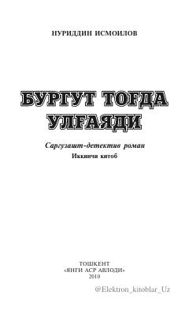

BTTog'da ulg'aygan burgutning qismati va fojiali voqealar davomi.
Ushbu sarguzasht-detektiv roman mashhur asarning davomi bo'lib, bosh qahramonning fojiali o'limidan keyingi murakkab taqdir sinovlari va Mohirxo'y boshidan kechirayotgan ruhiy o'zgarishlarni hikoya qiladi. Asarda oilaviy munosabatlar, jamiyatdagi bosimlar va insoniy kechinmalar ta'sirchan tarzda ochib berilgan.